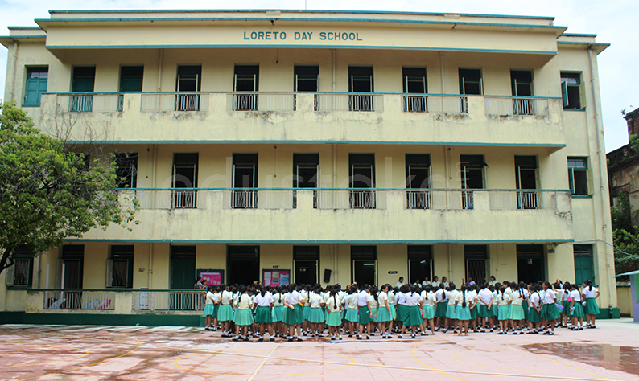
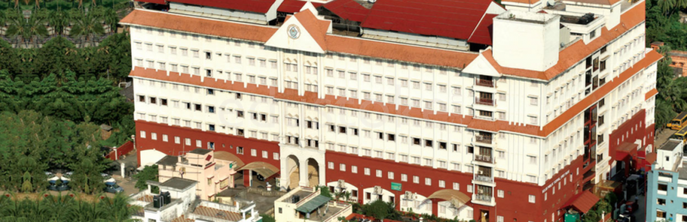
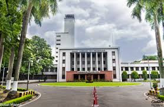

Nice sweet beginnings...
That's my school: Loreto Day School, Elliot Road in Kolkata.
I studied there from nursery till class 10. Before JEE struck my life.
It's a sweet small school located in Central Kolkata, just off Park Street.
I gave my ICSE from this school and was the ICSE topper of my batch 0f 2017
This place has been the site of some of my best memories....
The Stress-Filled Middle....
This was my plus 2 time. I changed my school to DPS Ruby Park.
2 years later, I gave my CBSE class 12 exams and was the board topper of dps for 2019.


The Present Chapter.....
And now we have reached the current chapter of my life.
After much efforts, I finally reached my dream.... IIT Kharagpur
I am now a first year student of the Mechanical Engineering Department.